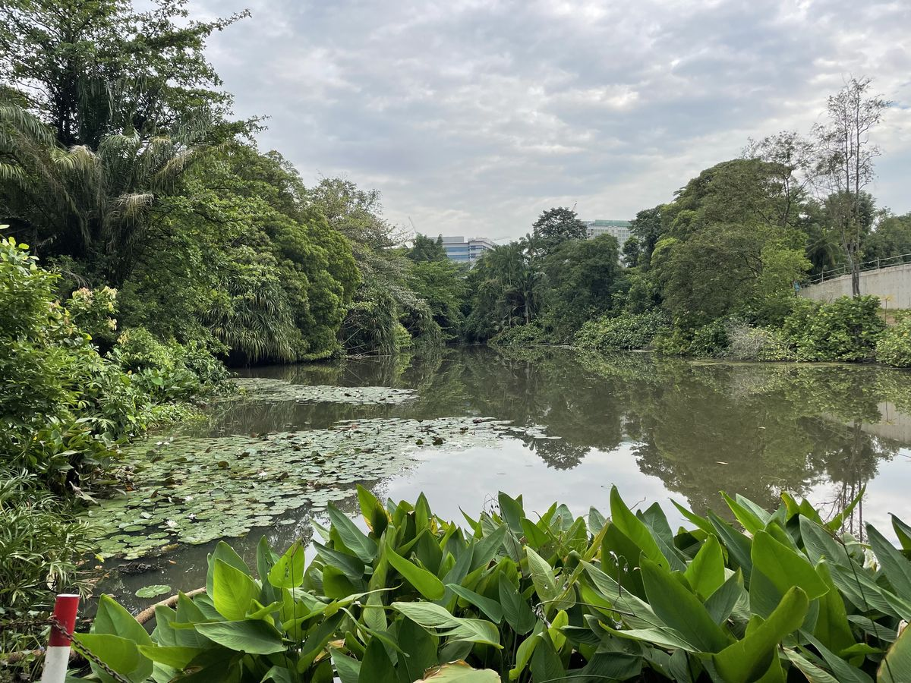
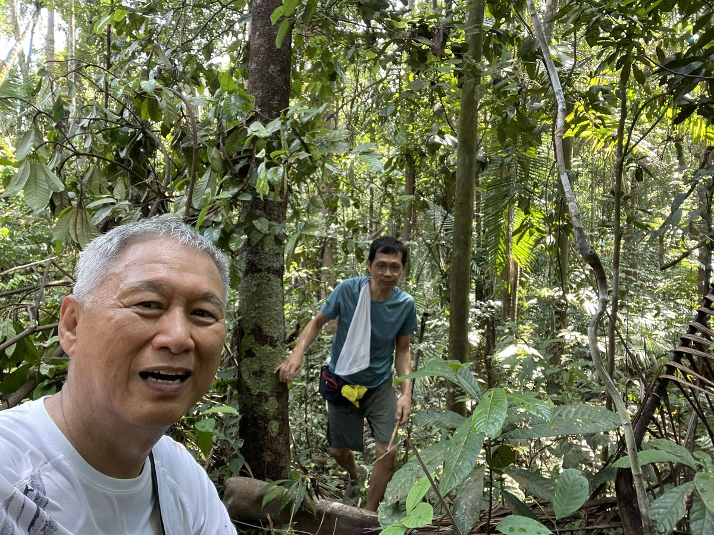
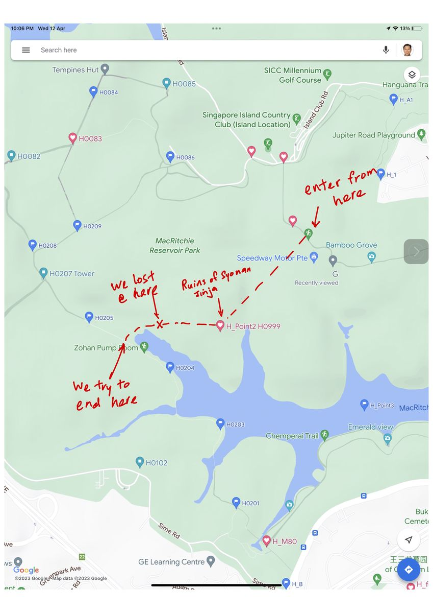
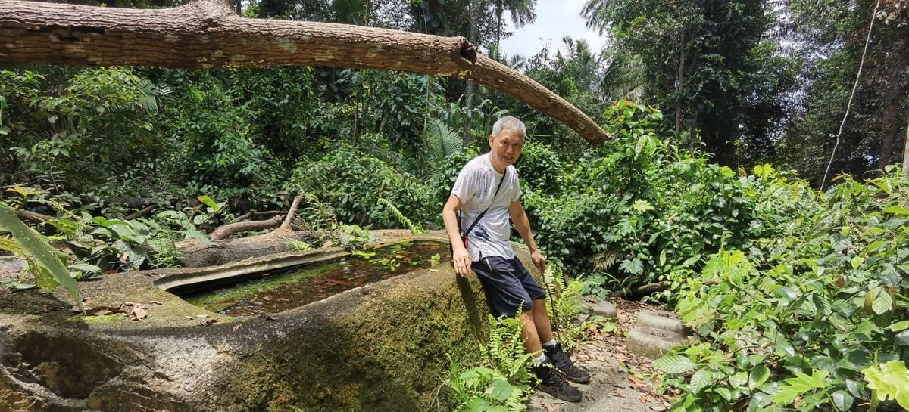
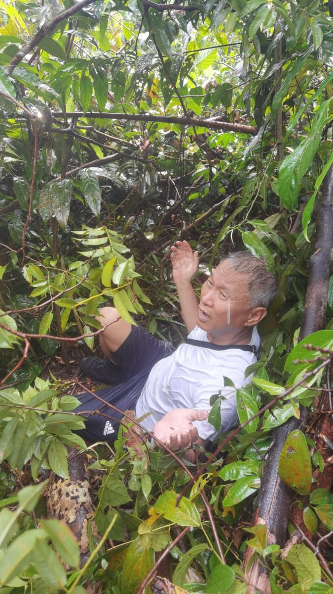
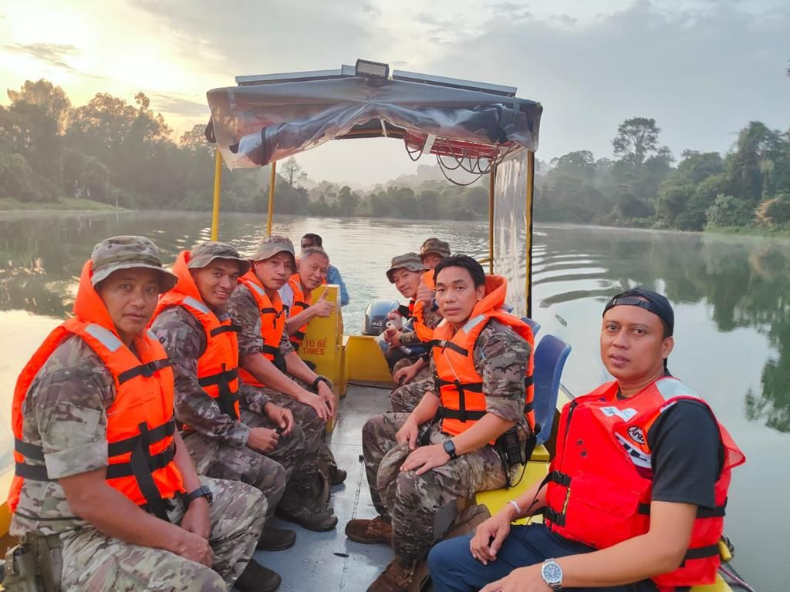
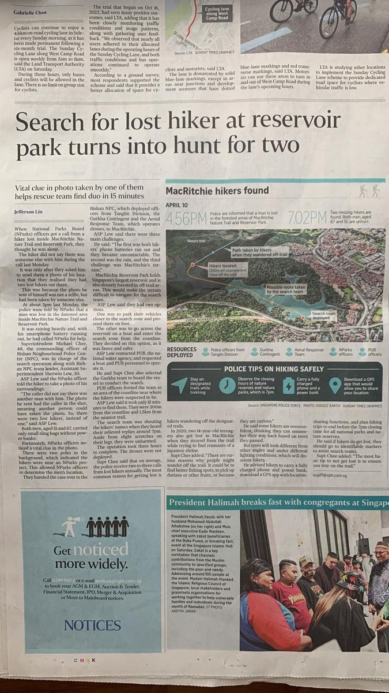

On April 10, 2023, my friend and I got completely lost inside MacRitchie Nature Trail and Reservoir Park. What followed was a rescue operation involving the Singapore Police Force, the Gurkha Contingent, the Aerial Response Team, and officers from NParks and PUB. We made the national news.2023年4月10日，我和朋友在MacRitchie自然步道和水库公园里完全迷路了。随后展开的是一场搜救行动，涉及新加坡警察部队、廓尔喀部队、空中应急小组以及NParks和PUB的人员。我们登上了全国新闻。
This is the full story — told honestly, with a little humour.这是完整的故事——诚实地讲述，带着一点幽默。
🥾 How It All Started — A Walk From Home一切的起源——从家出发的徒步

It started simply enough. My friend, aged 51, and I decided to go for a hike. We left my house at 8am feeling confident and well-prepared — or so we thought. MacRitchie is a well-known nature reserve in the heart of Singapore. Families go there. School children go there. It did not seem dangerous.事情的起因很简单。我和一位51岁的朋友决定去徒步。我们早上8点从我家出发，自信满满，自以为准备充分——然而事实并非如此。麦里芝是位于新加坡心脏地带的著名自然保护区，家庭和学生常来此游玩，看起来并不危险。
We did not bring enough water. We did not have offline maps. We did not tell anyone exactly which trail we were taking. Three classic mistakes — and we made all three before 9am.我们没带足够的水，没有离线地图，也没有告诉任何人我们走哪条路。三个经典错误——我们在早上9点前就全犯了。

⛩️ Stuck at the Japanese Temple困在日本神社

At 3pm, we reached the Ruins of Syonan Jinja — the old Japanese shrine deep inside the reserve. It was an interesting landmark — but we had a serious problem. We could not find the trail back out. Every path looked the same. The jungle was dense, the light was fading, and my phone battery was at 12%.下午3点，我们到达昭南神社遗址——保护区深处的一座旧日本神社。这是个有趣的地标，但我们遇到了严重问题：找不到回去的路。每条路看起来都一样，丛林茂密，天色渐暗，我的手机电量只剩12%。
We tried three different paths. Each time, we ended up back at the same spot. We were going in circles. That was the moment I admitted to myself: we are genuinely lost.我们尝试了三条不同的路，每次都回到了同一个地方。我们在转圈。就在那一刻，我承认了：我们真的迷路了。
🌧️ The Rain Comes — and So Does the Reality大雨袭来——现实降临

Then it started to rain heavily. We were soaked, exhausted, and completely off the trail. My friend's battery was dead. Mine was barely alive. We called 999.然后开始下大雨。我们浑身湿透、精疲力竭，完全偏离了小径。朋友的手机已没电，我的也快不行了。我们拨打了999。
Within the hour: Singapore Police Force · Gurkha Contingent · Aerial Response Team · NParks · PUB were all deployed. It became a full search-and-rescue operation broadcast on national news.不到一小时：新加坡警察部队 · 廓尔喀部队 · 空中应急小组 · 国家公园局 · 公用事业局全部出动。这成了一场全国新闻报道的搜救行动。
🚔 The Rescue Boat Arrives救援船来了

The Singapore Police Force deployed officers from multiple units. A rescue boat came through the reservoir. The Aerial Response Team swept overhead with drones. We were found at dusk — cold, embarrassed, but completely safe. The officers were professional and kind. They did not scold us.新加坡警察部队从多个部门调派警员。一艘救援船穿越水库。空中应急小组用无人机在上空搜寻。我们在黄昏时被发现——又冷又窘迫，但完全安全。警员们专业而友善，没有责怪我们。
📰 We Made the National News我们登上了全国新闻

📋 What I Learned — The Hard Way我付出代价学到的教训
MacRitchie taught me that overconfidence is the most dangerous thing you can bring into a forest. Here is what I now carry on every single hike — no exceptions:MacRitchie让我明白，自以为是是走进森林最危险的东西。以下是我如今每次徒步必备的清单——毫无例外：
🎒 Paul's Hike Checklist (Learned the Hard Way)保罗的徒步清单（付出代价换来的教训）
- 📱 Offline maps downloaded before you leave (Maps.me or AllTrails)📱 出发前下载好离线地图（Maps.me 或 AllTrails）
- 🔋 Fully charged power bank — always🔋 充满电的移动电源——必备
- 💧 At least 1.5 litres of water per person💧 每人至少1.5升水
- 📍 Tell someone your exact trail and expected return time📍 告知他人你走的路线和预计返回时间
- 🌦️ Check the weather — Singapore rain is not gentle🌦️ 检查天气——新加坡的雨可不温柔
- 🆘 Know the emergency number: 999 (Singapore)🆘 记住紧急号码：999（新加坡）
I am 67 years old. I still hike. I still explore. But now I do it smarter — with offline maps, a fully charged power bank, and a healthy respect for nature. The forest does not care how many countries you have visited. It will humble you every time.我今年67岁，仍在徒步，仍在探索。但现在我更聪明了——带着离线地图、充满电的移动电源，以及对大自然发自内心的敬畏。森林不在乎你去过多少个国家，它每次都会让你低头。